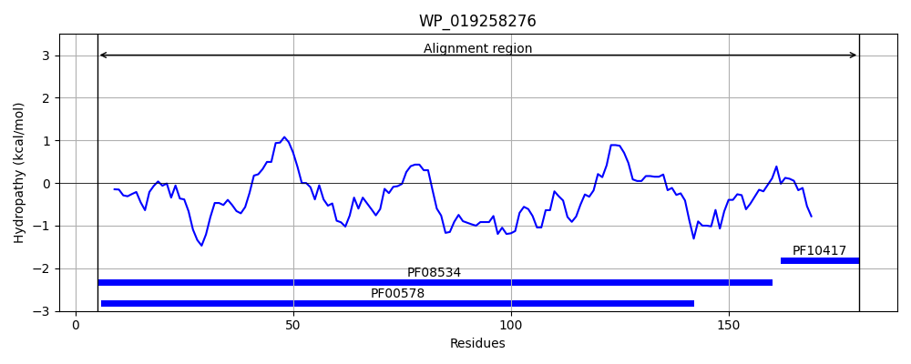
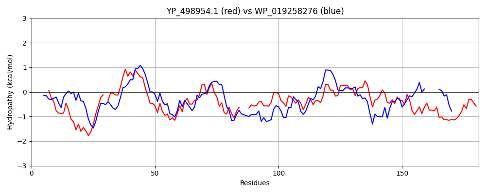

Hit Accession: WP_019258276
Hit TCID: 8.A.147.1.2
Hit Description: gnl|BL_ORD_ID|20912 gnl|TC-DB|WP_019258276.1|8.A.147.1.2 peroxiredoxin [Bacillus subtilis]
Mach Len: 181
e:0.000000
Query TMS Count : 0
Hit TMS Count: 0
TMS-Overlap Score: 0.000000
Predicted Substrates:CHEBI:24493;hemin
BLAST Alignment:
Score: 294 , Bit scores: 117 bits, E-value: 9.4e-34, Alignment length: 181, Percentage identity: 35
Query: 3 LINKEILPFTAQAFDPKKDQFKEVTQEDLK-GSWSVVCFYPADFSFVCPTELEDLQNQYEELQKLGVNVFSVSTDTHFVHKAWHD---HSDAISKITYTMIGDPSQTITRNFDVLDEATGLAQRGTFIIDPDGVVQASEINADGIGRDASTLAHKIKAAQYVRKNPGEVCPAKWEEGAKTL 179
++ K+ F +A K+ K +E++K W+V+ FYP DF+FVCPTE+ + +Y+E + L V VSTDT H AW + + + ++ Y + D + ++R + VL E G+A RG FII+P+G +Q + + IGRD ++A Q G +CPA W+ G KTL
Sbjct: 5 MVGKQAPRFEMEAVLASKEFGKVSLEENMKKDKWTVLFFYPMDFTFVCPTEITAMSERYDEFEDLDAEVIGVSTDTIHTHLAWINTDRKENGLGQLKYPLAADTNHEVSREYGVLIEEEGVALRGLFIINPEGELQYQTVFHNNIGRDVDETLRVLQALQ-----TGGLCPANWKPGQKTL 180 | Protein Hydropathy Plots: |
|---|
 |  |
Pairwise Alignment-Hydropathy Plot:
|
|---|
|  |